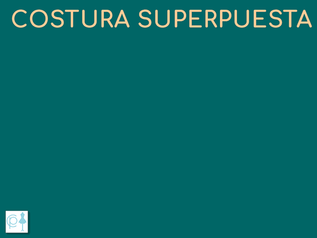

Costuras
Aunque existe una variedad grande de las costuras, los tipos de costuras más usadas son aproximadamente 5, con algunas variaciones entre cada tipo. Te explico como son, para que se usan habitualmente y cómo puedes hacerlas fácilmente.
Tipos de costuras
Costura superpuesta
Es la costura “todoterreno”, qué se usa para montar las piezas de la prenda, los detalles decorativos o los detalles funcionales como los cuellos, los tapetes, los puños, etc. Si los bordes de la costura no se quedan tapados por el forro dentro de un detalle cerrado, será necesario sobrehilarlos, excepto en los casos cuando la tela no se deshilacha.
El acabado de la costura superpuesta puede ser muy variado, dependiendo del material de la prenda y de su diseño. Para las telas gruesas es aconsejable abrir la costura para suavizar la unión entre los detalles principales de la prenda. Para las telas finas, normalmente, la costura, al plancharla se dobla para el lado de la espalda de la prenda.
Como te dije antes es uno de los más fáciles tipos de costuras:
Une los bordes de los detalles cara a dentro
Pasa el pespunte a la distancia deseada del borde: 1 – 1,2 cm. para las telas gruesas o unión de los detalles principales; 0,5 – 0,7 cm. para las telas finas o las costuras con la forma pronunciada;
Planchar la costura desplegando ambos lados de la costura o planchando los lados juntos para un lado;
